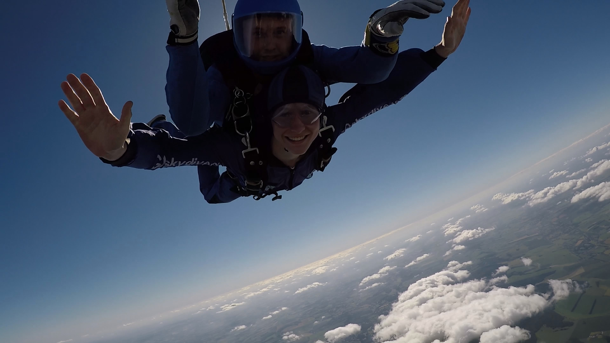

My Hobbies
Karate
This is the first paragraph about your hobby. The image will appear on the **left side**, and your text will wrap neatly around it on the right. You can write about why you enjoy this activity, where you usually do it, or what inspired you to start. Ensure this paragraph is long enough (at least 4-5 lines) for the text to fully flow around the height of the image.
Travelling
 This is the second paragraph, and the image will float to the **right side**. Your text will wrap around the left side of the image. You can detail the technical aspects of this hobby, favorite projects, or specific equipment you use. Remember to use text long enough to make the wrapping look good!
This is the second paragraph, and the image will float to the **right side**. Your text will wrap around the left side of the image. You can detail the technical aspects of this hobby, favorite projects, or specific equipment you use. Remember to use text long enough to make the wrapping look good!
Skydiving
 This is the final paragraph, returning the image to the **left side** for consistency. Here you can write about your intellectual or creative pursuits, favorite authors, or any unique collections you have. The template handles the necessary margins and floating automatically with these classes.